geom_rmc: ggplot2 geom for simplified graphing
Arguments
- rmc
an object of class "rmc" generated from the
rmcorrfunction.
Examples
my.rmc <- rmcorr(participant = Subject, measure1 = PaCO2, measure2 = pH,
dataset = bland1995)
#> Warning: 'Subject' coerced into a factor
ggplot2::ggplot(bland1995,
ggplot2::aes(x = PaCO2,
y = pH,
color = factor(Subject))) +
geom_rmc(my.rmc)
##manually:
ggplot2::ggplot(bland1995,
ggplot2::aes(x = PaCO2,
y = pH,
color = factor(Subject))) +
ggplot2::geom_point(ggplot2::aes(colour = factor(Subject))) +
ggplot2::geom_line(ggplot2::aes(y = my.rmc$model$fitted.values),
linetype = 1)
 ##another example:
##new theme, remove legend, and custom color pal
ggplot2::ggplot(bland1995,
ggplot2::aes(x = PaCO2,
y = pH,
color = factor(Subject))) +
geom_rmc(my.rmc) +
ggplot2::theme_minimal() +
ggplot2::theme(legend.position="none") +
ggplot2::scale_color_brewer(palette="Dark2")

##another example:
##new theme, remove legend, and custom color pal
ggplot2::ggplot(bland1995,
ggplot2::aes(x = PaCO2,
y = pH,
color = factor(Subject))) +
geom_rmc(my.rmc) +
ggplot2::theme_minimal() +
ggplot2::theme(legend.position="none") +
ggplot2::scale_color_brewer(palette="Dark2")
